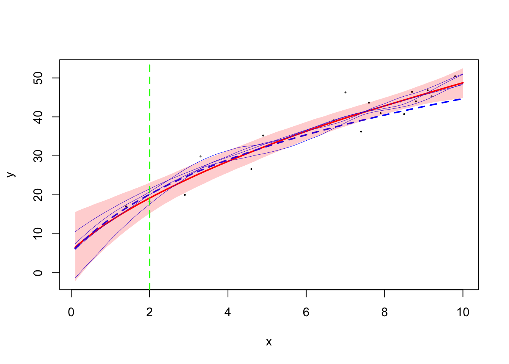

Last updated: 2024-11-06
Checks: 6 1
Knit directory: summary/
This reproducible R Markdown analysis was created with workflowr (version 1.7.1). The Checks tab describes the reproducibility checks that were applied when the results were created. The Past versions tab lists the development history.
The R Markdown is untracked by Git. To know which version of the R
Markdown file created these results, you’ll want to first commit it to
the Git repo. If you’re still working on the analysis, you can ignore
this warning. When you’re finished, you can run
wflow_publish to commit the R Markdown file and build the
HTML.
Great job! The global environment was empty. Objects defined in the global environment can affect the analysis in your R Markdown file in unknown ways. For reproduciblity it’s best to always run the code in an empty environment.
The command set.seed(20240619) was run prior to running
the code in the R Markdown file. Setting a seed ensures that any results
that rely on randomness, e.g. subsampling or permutations, are
reproducible.
Great job! Recording the operating system, R version, and package versions is critical for reproducibility.
Nice! There were no cached chunks for this analysis, so you can be confident that you successfully produced the results during this run.
Great job! Using relative paths to the files within your workflowr project makes it easier to run your code on other machines.
Great! You are using Git for version control. Tracking code development and connecting the code version to the results is critical for reproducibility.
The results in this page were generated with repository version d0c7b6f. See the Past versions tab to see a history of the changes made to the R Markdown and HTML files.
Note that you need to be careful to ensure that all relevant files for
the analysis have been committed to Git prior to generating the results
(you can use wflow_publish or
wflow_git_commit). workflowr only checks the R Markdown
file, but you know if there are other scripts or data files that it
depends on. Below is the status of the Git repository when the results
were generated:
Ignored files:
Ignored: .DS_Store
Ignored: .RData
Ignored: .Rhistory
Ignored: .Rproj.user/
Ignored: analysis/.DS_Store
Ignored: analysis/.RData
Ignored: analysis/.Rhistory
Ignored: code/.DS_Store
Ignored: code/.Rhistory
Untracked files:
Untracked: analysis/FEM_arbitrary_ref.rmd
Untracked: code/fit_FEM_ref.R
Untracked: code/fit_FEM_ref_new.R
Untracked: code/sim_MGP.cpp
Untracked: code/sim_MGP.o
Untracked: code/sim_MGP.so
Unstaged changes:
Modified: analysis/illustration.rmd
Modified: code/02-FEM.R
Note that any generated files, e.g. HTML, png, CSS, etc., are not included in this status report because it is ok for generated content to have uncommitted changes.
There are no past versions. Publish this analysis with
wflow_publish() to start tracking its development.
library(tidyverse)── Attaching core tidyverse packages ──────────────────────── tidyverse 2.0.0 ──
✔ dplyr 1.1.4 ✔ readr 2.1.5
✔ forcats 1.0.0 ✔ stringr 1.5.1
✔ ggplot2 3.5.1 ✔ tibble 3.2.1
✔ lubridate 1.9.3 ✔ tidyr 1.3.1
✔ purrr 1.0.2
── Conflicts ────────────────────────────────────────── tidyverse_conflicts() ──
✖ dplyr::filter() masks stats::filter()
✖ dplyr::lag() masks stats::lag()
ℹ Use the conflicted package (<http://conflicted.r-lib.org/>) to force all conflicts to become errorslibrary(Matrix)
Attaching package: 'Matrix'
The following objects are masked from 'package:tidyr':
expand, pack, unpacksource("code/01-state-space.R")
source("code/02-FEM.R")
source("code/03-sampling.R")
TMB::compile("code/fitGP_known_sd.cpp")Note: Using Makevars in /Users/ziangzhang/.R/Makevars using C++ compiler: 'Apple clang version 13.1.6 (clang-1316.0.21.2.5)'
using SDK: 'MacOSX12.3.sdk'[1] 0dyn.load(TMB::dynlib("code/fitGP_known_sd"))
TMB::compile("code/sim_MGP.cpp")Note: Using Makevars in /Users/ziangzhang/.R/Makevars using C++ compiler: 'Apple clang version 13.1.6 (clang-1316.0.21.2.5)'
using SDK: 'MacOSX12.3.sdk'[1] 0dyn.load(TMB::dynlib("code/sim_MGP"))# Helper function to prepare common data
prepare_fem_data <- function(data_sim, data_train, k, a, c, ref_location = NULL) {
# Set ref_location if not provided
if (is.null(ref_location)) {
ref_location <- median(data_sim$x)
}
# Compute lambda
lambda <- (a - 1) / a
# Fixed design matrix
m <- function(x){
if(lambda == 0)
(c + ref_location)*(log(x + c) - log(c + ref_location))
else
((x + c)^lambda - (c + ref_location)^lambda)/(lambda * (c + ref_location)^(lambda - 1))
}
# Fixed design matrix for training data
X_train <- Matrix::sparse.model.matrix(~ 1 + m(data_train$x))
# Update c based on ref_location
c_new <- c + ref_location
# Prepare forward and backward design matrices for training data
train_x_pos <- pmax(data_train$x - ref_location, 0)
all_x_pos <- pmax(data_sim$x - ref_location, 0)
train_x_neg <- pmax(ref_location - data_train$x, 0)
all_x_neg <- pmax(ref_location - data_sim$x, 0)
# Define B and penalty matrices based on non-zero regions for training data
if (all(all_x_pos == 0)) {
B_train <- Compute_Design(train_x_neg, k, region = range(all_x_neg))
P <- Compute_Prec_rev(k, region = range(all_x_neg), a = a, c = c_new)
B_sim <- Compute_Design(all_x_neg, k, region = range(all_x_neg))
} else if (all(all_x_neg == 0)) {
B_train <- Compute_Design(train_x_pos, k, region = range(all_x_pos))
P <- Compute_Prec(k, region = range(all_x_pos), a = a, c = c_new)
B_sim <- Compute_Design(all_x_pos, k, region = range(all_x_pos))
} else {
B_pos <- Compute_Design(train_x_pos, k, region = range(all_x_pos))
B_neg <- Compute_Design(train_x_neg, k, region = range(all_x_neg))
B_train <- Matrix::cbind2(B_pos, B_neg)
B_pos <- Compute_Design(all_x_pos, k, region = range(all_x_pos))
B_neg <- Compute_Design(all_x_neg, k, region = range(all_x_neg))
B_sim <- Matrix::cbind2(B_pos, B_neg)
# Penalty matrices
P_pos <- Compute_Prec(k, region = range(all_x_pos), a = a, c = c_new)
P_neg <- Compute_Prec_rev(k, region = range(all_x_neg), a = a, c = c_new)
P <- Matrix::bdiag(P_pos, P_neg)
}
# Fixed design matrix for simulation data
X_sim <- Matrix::sparse.model.matrix(~ 1 + m(data_sim$x))
# Convert all matrices to "dgTMatrix" format before returning
return(list(
X_train = as(X_train, "dgTMatrix"),
B_train = as(B_train, "dgTMatrix"),
X_sim = as(X_sim, "dgTMatrix"),
B_sim = as(B_sim, "dgTMatrix"),
P = as(P, "dgTMatrix"),
logPdet = as.numeric(determinant(P)$modulus),
ref_location = ref_location
))
}
# Updated fit_mGP_once_FEM_ref function
fit_mGP_once_FEM_ref <- function(data_sim, data_train, u, betaprec = 0.001,
k = 30, a, c, ref_location = NULL, accuracy = 0.01, boundary = TRUE) {
# Prepare shared data
fem_data <- prepare_fem_data(data_sim, data_train, k, a, c, ref_location)
# Model fitting data
tmbdat <- list(
y = data_train$y, X = fem_data$X_train, B = fem_data$B_train, P = fem_data$P,
logPdet = fem_data$logPdet, betaprec = betaprec, sig = sd_noise,
u = u, alpha = 0.5
)
tmbparams <- list(W = numeric(ncol(fem_data$X_train) + ncol(fem_data$B_train)), theta = 0)
# Fit model
ff <- TMB::MakeADFun(data = tmbdat, parameters = tmbparams, DLL = "fitGP_known_sd",
random = "W", silent = TRUE)
ff$he <- function(w) numDeriv::jacobian(ff$gr, w)
fit <- aghq::marginal_laplace_tmb(ff, k = 4, startingvalue = 0)
# Return fit along with pre-computed data for sampling
return(list(fit = fit, X_sim = fem_data$X_sim, B_sim = fem_data$B_sim, ref_location = fem_data$ref_location))
}
# Updated sample_model_once_FEM_ref function
sample_model_once_FEM_ref <- function(model_fit, M = 3000) {
# Extract fit and simulation design matrices
fit <- model_fit$fit
X_sim <- model_fit$X_sim
B_sim <- model_fit$B_sim
# Sampling
samps <- aghq::sample_marginal(quad = fit, M = M)
beta_samps <- samps$samps[(nrow(samps$samps) - 1):nrow(samps$samps),]
basis_weights_samps <- samps$samps[1:(nrow(samps$samps) - 2),]
# Use pre-computed matrices for sampling on data_sim
f_samps_combined <- X_sim %*% beta_samps + B_sim %*% basis_weights_samps
return(f_samps_combined)
}Simulate a full dataset (data_sim) and a reduced dataset
for training (data_train).
set.seed(123)
samp_max <- 10
c <- 1
sd_noise <- 4
n <- 100
f <- function(x) (3+4*log(x + c))^1.5
x <- seq(0, samp_max, length.out = (n+1))[-1]
y <- f(x) + rnorm(n, sd = sd_noise)
data_sim <- data.frame(x = x, y = y) %>% arrange(x)
# Set the total number of training points
train_size <- 0.2 * nrow(data_sim) # Adjust this proportion as needed
# Define sampling weights to favor points with higher x values
sampling_weights <- scales::rescale(data_sim$x, to = c(0.1, 1))
# Sample with weights
data_train <- data_sim %>%
slice_sample(n = train_size, weight_by = sampling_weights)Try fitting the model and plot the result:
ref_location_choice <- 2
a <- 2 # recall lambda = (a-1)/a
mGP_FEM <- fit_mGP_once_FEM_ref(data_sim = data_sim, data_train = data_train,
u = 1, k = 50,
ref_location = ref_location_choice,
betaprec = 1e-7,
a = a, c = c)'as(<dgCMatrix>, "dgTMatrix")' is deprecated.
Use 'as(., "TsparseMatrix")' instead.
See help("Deprecated") and help("Matrix-deprecated").samples_mGP_FEM <- sample_model_once_FEM_ref(model_fit = mGP_FEM, M = 3000)
mGP_FEM_summary <- data.frame(x = data_sim$x, mean = rowMeans(samples_mGP_FEM),
lower = apply(samples_mGP_FEM, 1, quantile, probs = 0.025),
upper = apply(samples_mGP_FEM, 1, quantile, probs = 0.975))
plot(data_sim$x, data_sim$y, type = "n", col = "black",
lwd = 1, pch = 1, cex = 0.2,
ylim = range(c(mGP_FEM_summary$lower, rev(mGP_FEM_summary$upper))), ylab = "y", xlab = "x")
points(data_train$x, data_train$y, col = "black", pch = 1, cex = 0.2)
lines(mGP_FEM_summary$x, mGP_FEM_summary$mean, col = "red", lwd = 2)
lines(mGP_FEM_summary$x, f(mGP_FEM_summary$x), col = "blue", lwd = 2, lty = 2)
matlines(x = mGP_FEM_summary$x, y = samples_mGP_FEM[,2:5], lty = 1, col = "blue", lwd = 0.5)
polygon(c(mGP_FEM_summary$x, rev(mGP_FEM_summary$x)), c(mGP_FEM_summary$lower, rev(mGP_FEM_summary$upper)), col = rgb(1, 0, 0, 0.2), border = NA)
abline(v = ref_location_choice, col = "green", lwd = 2, lty = 2)
Simulate some samples from mGP to double check:
sim_mGP_once_FEM_ref <- function(data_sim, data_train, betaprec = 0.001,
k = 30, u, a, c, ref_location = NULL, accuracy = 0.01, boundary = TRUE) {
# Prepare shared data
fem_data <- prepare_fem_data(data_sim, data_train, k, a, c, ref_location)
# Model fitting data
tmbdat <- list(
y = data_train$y, X = fem_data$X_train, B = fem_data$B_train, P = fem_data$P,
logPdet = fem_data$logPdet, betaprec = betaprec, sig = sd_noise,
u = u, alpha = 0.5
)
tmbparams <- list(W = numeric(ncol(fem_data$X_train) + ncol(fem_data$B_train)), theta = 0)
# Fit model
ff <- TMB::MakeADFun(data = tmbdat, parameters = tmbparams, DLL = "sim_MGP",
random = "W", silent = TRUE)
ff$he <- function(w) numDeriv::jacobian(ff$gr, w)
fit <- aghq::marginal_laplace_tmb(ff, k = 4, startingvalue = 0)
# Return fit along with pre-computed data for sampling
return(list(fit = fit, X_sim = fem_data$X_sim, B_sim = fem_data$B_sim, ref_location = fem_data$ref_location))
}ref_location_choice <- 5
a <- 2 # recall lambda = (a-1)/a
mGP_FEM <- sim_mGP_once_FEM_ref(data_sim = data_sim, data_train = data_train,
u = 1e-12, k = 50,
ref_location = ref_location_choice,
betaprec = 1e7,
a = a, c = c)
samples_mGP_FEM <- sample_model_once_FEM_ref(model_fit = mGP_FEM, M = 3000)
mGP_FEM_summary <- data.frame(x = data_sim$x, mean = rowMeans(samples_mGP_FEM),
lower = apply(samples_mGP_FEM, 1, quantile, probs = 0.025),
upper = apply(samples_mGP_FEM, 1, quantile, probs = 0.975))
plot(data_sim$x, data_sim$y, type = "n", col = "black",
lwd = 1, pch = 1, cex = 0.2,
ylim = range(c(mGP_FEM_summary$lower, rev(mGP_FEM_summary$upper))), ylab = "y", xlab = "x")
points(data_train$x, data_train$y, col = "black", pch = 1, cex = 0.2)
lines(mGP_FEM_summary$x, mGP_FEM_summary$mean, col = "red", lwd = 2)
lines(mGP_FEM_summary$x, f(mGP_FEM_summary$x), col = "blue", lwd = 2, lty = 2)
matlines(x = mGP_FEM_summary$x, y = samples_mGP_FEM[,2:15], lty = 1, col = "blue", lwd = 0.5)
polygon(c(mGP_FEM_summary$x, rev(mGP_FEM_summary$x)), c(mGP_FEM_summary$lower, rev(mGP_FEM_summary$upper)), col = rgb(1, 0, 0, 0.2), border = NA)
abline(v = ref_location_choice, col = "green", lwd = 2, lty = 2)
sessionInfo()R version 4.3.1 (2023-06-16)
Platform: aarch64-apple-darwin20 (64-bit)
Running under: macOS Monterey 12.7.4
Matrix products: default
BLAS: /Library/Frameworks/R.framework/Versions/4.3-arm64/Resources/lib/libRblas.0.dylib
LAPACK: /Library/Frameworks/R.framework/Versions/4.3-arm64/Resources/lib/libRlapack.dylib; LAPACK version 3.11.0
locale:
[1] en_US.UTF-8/en_US.UTF-8/en_US.UTF-8/C/en_US.UTF-8/en_US.UTF-8
time zone: America/Chicago
tzcode source: internal
attached base packages:
[1] stats graphics grDevices utils datasets methods base
other attached packages:
[1] Matrix_1.6-4 lubridate_1.9.3 forcats_1.0.0 stringr_1.5.1
[5] dplyr_1.1.4 purrr_1.0.2 readr_2.1.5 tidyr_1.3.1
[9] tibble_3.2.1 ggplot2_3.5.1 tidyverse_2.0.0
loaded via a namespace (and not attached):
[1] gtable_0.3.5 TMB_1.9.15 xfun_0.48
[4] bslib_0.8.0 ks_1.14.3 lattice_0.22-6
[7] numDeriv_2016.8-1.1 tzdb_0.4.0 bitops_1.0-9
[10] vctrs_0.6.5 tools_4.3.1 generics_0.1.3
[13] aghq_0.4.1 fansi_1.0.6 highr_0.11
[16] cluster_2.1.6 pkgconfig_2.0.3 fds_1.8
[19] KernSmooth_2.23-24 data.table_1.16.2 lifecycle_1.0.4
[22] compiler_4.3.1 git2r_0.33.0 statmod_1.5.0
[25] munsell_0.5.1 mvQuad_1.0-8 httpuv_1.6.15
[28] htmltools_0.5.8.1 rainbow_3.8 sass_0.4.9
[31] RCurl_1.98-1.16 yaml_2.3.10 pracma_2.4.4
[34] later_1.3.2 pillar_1.9.0 jquerylib_0.1.4
[37] MASS_7.3-60 cachem_1.1.0 mclust_6.1.1
[40] tidyselect_1.2.1 digest_0.6.37 mvtnorm_1.3-1
[43] stringi_1.8.4 splines_4.3.1 pcaPP_2.0-5
[46] rprojroot_2.0.4 fastmap_1.2.0 grid_4.3.1
[49] colorspace_2.1-1 cli_3.6.3 magrittr_2.0.3
[52] utf8_1.2.4 withr_3.0.1 scales_1.3.0
[55] promises_1.3.0 timechange_0.3.0 rmarkdown_2.28
[58] deSolve_1.40 workflowr_1.7.1 hms_1.1.3
[61] evaluate_1.0.1 knitr_1.48 rlang_1.1.4
[64] Rcpp_1.0.13 glue_1.8.0 fda_6.2.0
[67] hdrcde_3.4 rstudioapi_0.16.0 jsonlite_1.8.9
[70] R6_2.5.1 fs_1.6.4